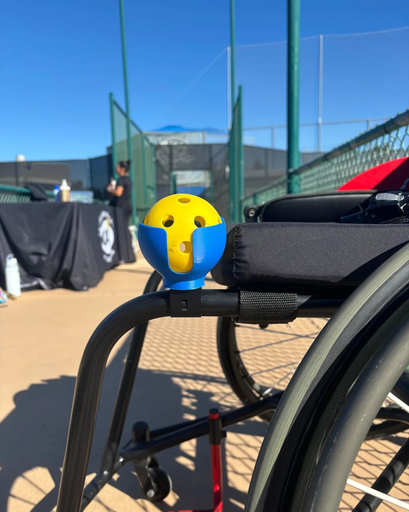
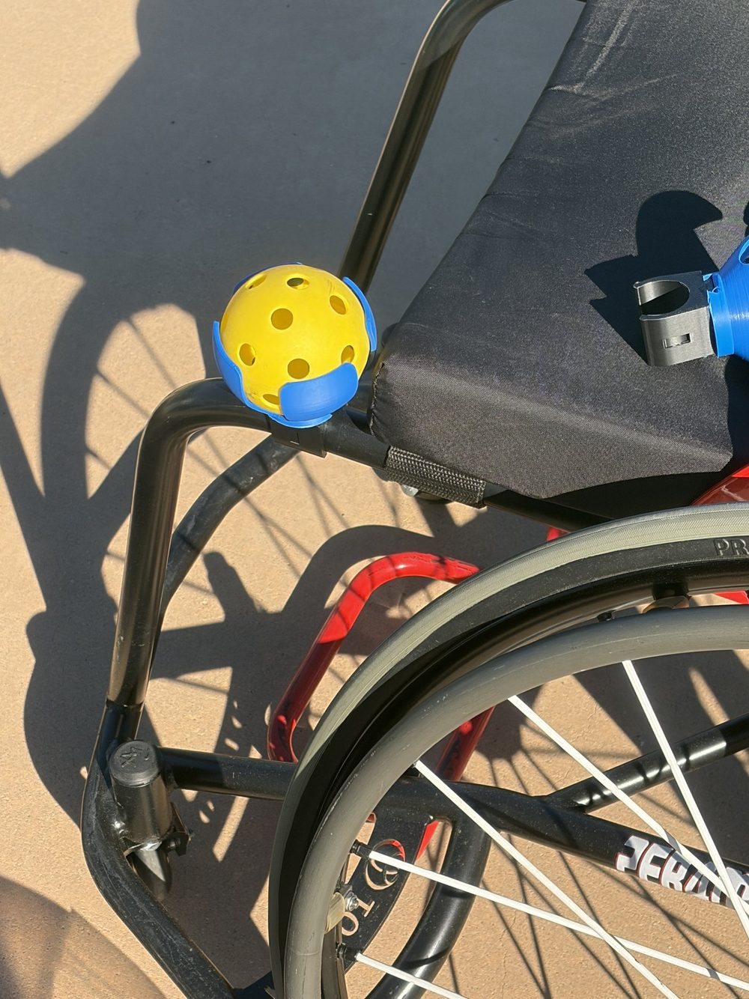
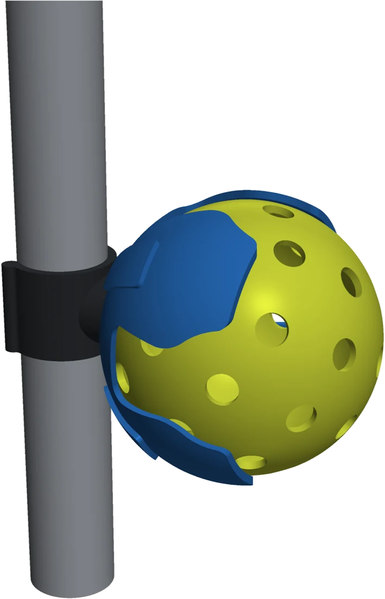
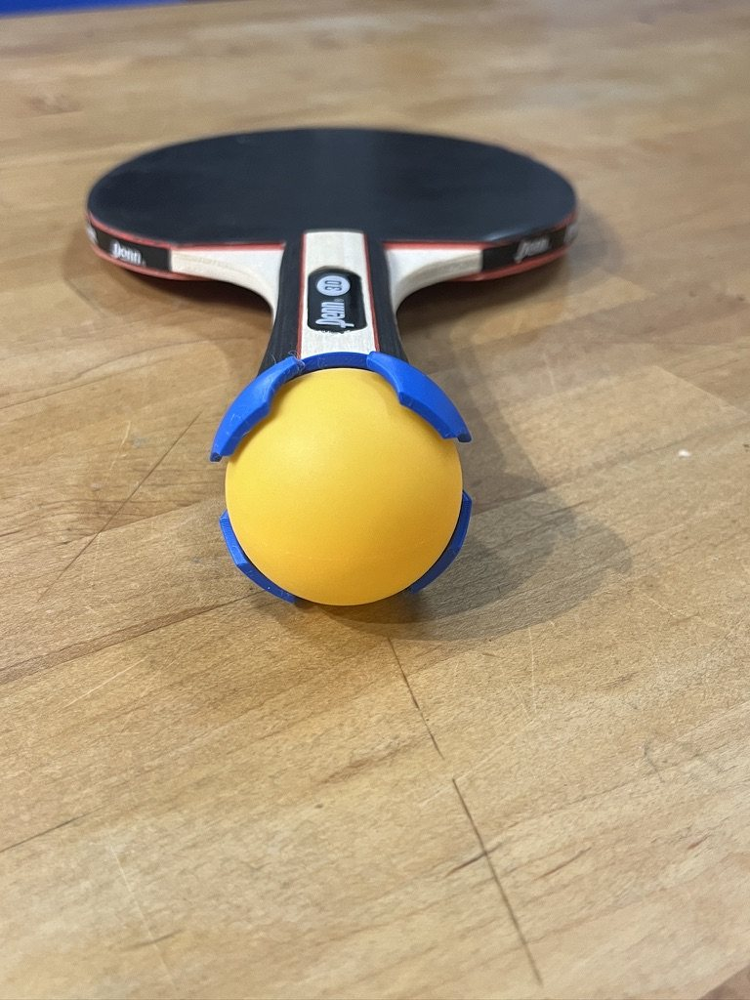
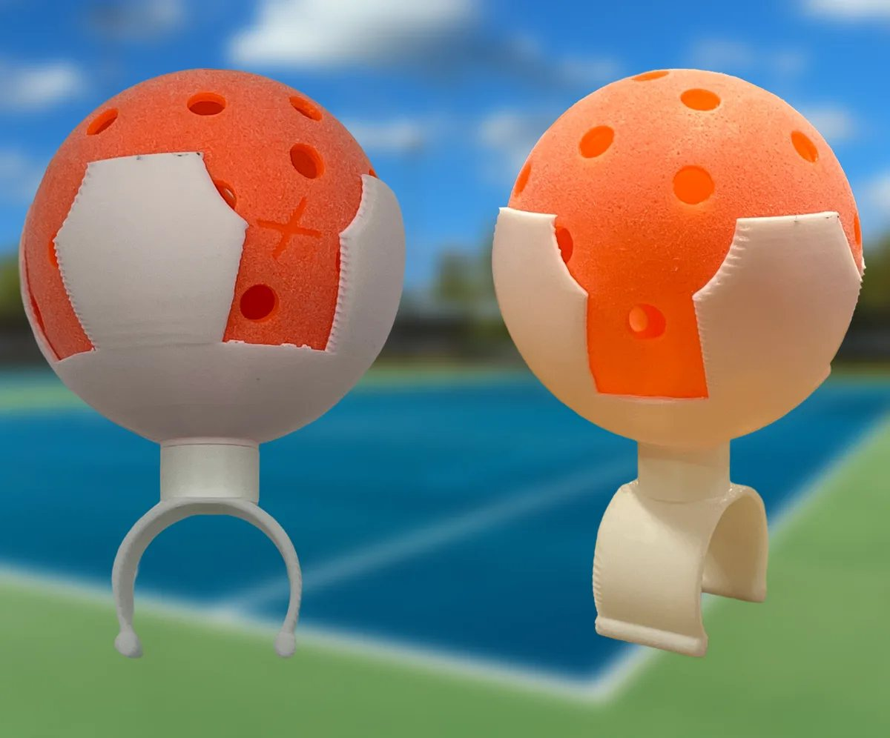
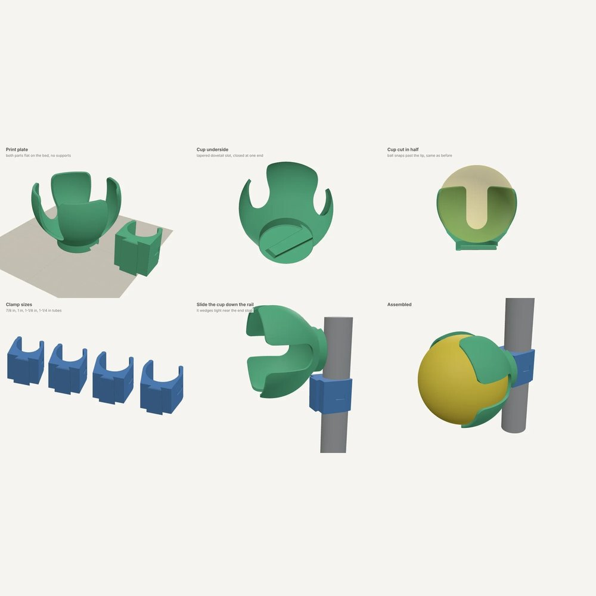
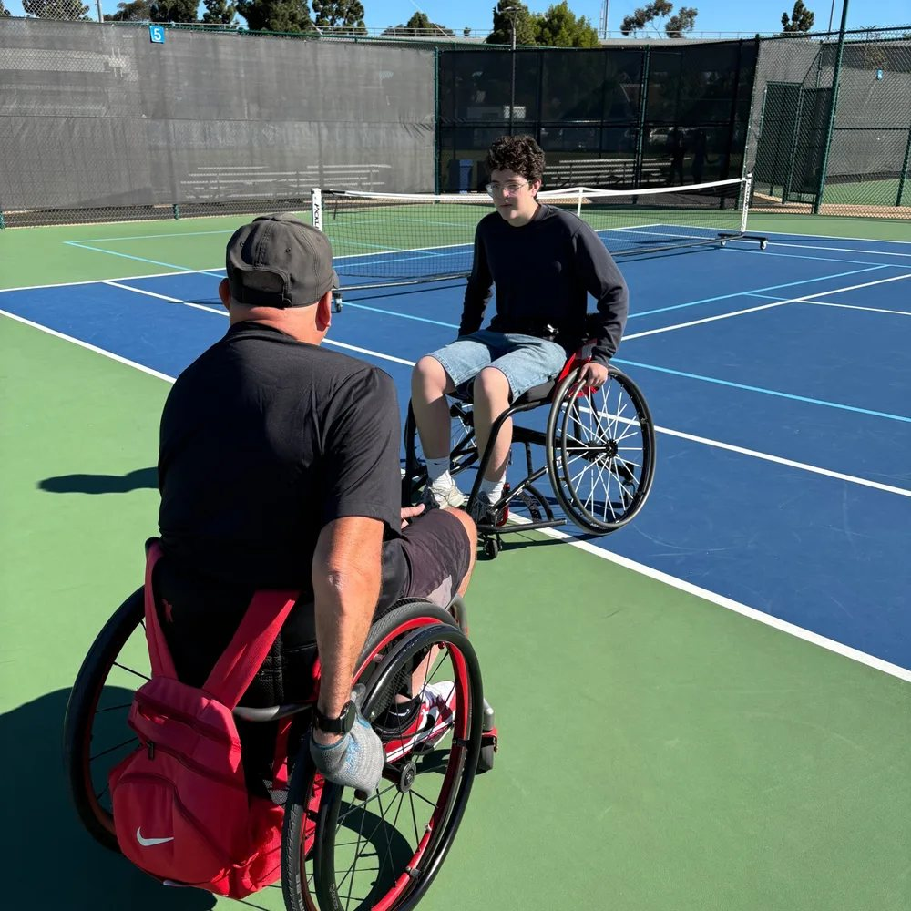

PickleDock
A 3D-printed dock that clamps onto a sports wheelchair and keeps a spare pickleball within reach.
In wheelchair pickleball, the same hands push the chair and swing the paddle. A spare ball in your lap rolls off, and pockets are hard to reach while seated. PickleDock gives the ball a fixed home on the frame, one short reach away.
It is two printed parts. A C-shaped clamp snaps onto a round frame tube, and a cup slides onto the clamp with a tapered dovetail. Four flexible fingers hold the ball until you pull it out. The clamp comes in four sizes and everything prints without supports. Getting to this version took more than 30 prototypes.
In October 2026 I brought it to a session with wheelchair athletes through the Challenged Athletes Foundation in San Diego. The clamps fit the players' chairs and the dock held through real play. The open question is where on the chair it works best, and that is what I am testing now.
- Timeline
- 2025 to present
- Tools
- CAD, 3D printing in PETG
- Prototypes
- More than 30 so far
- Tested with
- Wheelchair athletes, Challenged Athletes Foundation
- Funding
- $1,000 from the Torrey Explorers Fund
- Status
- Version 6. Print files are free to download.
- Next
- A back-bar mount for tennis chairs, more clamp sizes, and ready-made docks for players without a printer




2025
A clip for a ping pong paddle
The idea started as a ball holder for the paddles at my school's outdoor table.

First prints
A ball cage on a screw-on clamp
It held the ball, but it was hard to put on and take off, and tough to print cleanly.

Version 2
Rebuilt to print without supports
The cup sits flat on the print bed, with thicker fingers and a slide-on dovetail in place of the screw.

October 2026
On court with athletes
Fit and strength both passed. Placement on the chair is the next thing to solve.